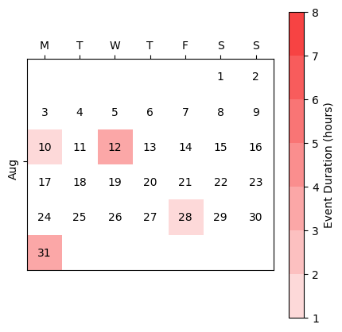

Example
To understand the tool more clearly let us look at the example of PG&E’s Capacity Bidding Program (CBP). The CBP is a demand response program that provides financial incentives to customers who can reduce their electricity usage during peak demand periods. The program has three options: the Prescribed, Elect and Elect+ option. The difference between the options is the maximum load reduction days and hours. The prices are the same for these three options. The notification time that PG&E says is 5pm the day before the event.
Based on the tariff structure, the program parameters for the PG&E CBP’s Prescribed option are
Program Parameter |
Value |
|---|---|
Program name |
PG&E CBP Prescribed |
Minimum number of event days |
1 |
Maximum number of event days |
6 |
Minimum duration of event |
1 |
Maximum duration of event |
8 |
Program start time |
16 |
Program end time |
20 |
Notification type |
day_before |
Notification time |
17 |
Maximum consecutive event days |
3 |
Number of similar weekdays |
10 |
For quick start to simulate dr events
from datetime import datetime
from dr_simulator import dr_events
from dr_simulator.visulization_helper import plot_dr_events
# Set the start and end date and time for the simulation
start_dt = datetime(2021, 7, 1, 0, 0, 0)
end_dt = datetime(2021, 8, 1, 0, 0, 0)
# Create a DR event simulator object
dr_event = dr_events.DemandResponseEvents(start_dt, end_dt)
# Set the program parameters
program_parameters = {
'min_days': 1,
'max_days': 6,
'min_duration': 1,
'max_duration': 8,
'program_start_time': 16,
'program_end_time': 20,
'notification_type': 'day_before',
'notification_time': 17,
'max_consecutive_event_days': 3,
'number_similar_weekdays': 10
}
# set the simulation parameters
simulation_parameters = {
'n_days': {
'distribution': 'poisson',
'distribution_parameters': {'lam': 3}
},
'event_duration': {
'distribution': 'poisson',
'distribution_parameters': {'lam': 4, 'size': 1}
},
'start_time': {
'distribution': 'uniform',
'distribution_parameters': {'low': 16, 'high': 21, 'size': 1}
},
'event_days': {
'p_dates': None
}
}
# Simulate the events
event_dict = dr_events.generate_event_dict(
program_parameters=program_parameters,
simulation_parameters=simulation_parameters
)
# visualize the events on the calender
fig, ax, cbar = plot_dr_events(
start_dt,
end_dt,
dr_event.event_days,
dr_event.event_duration
)
cbar.set_label('Event Duration (hours)')
fig.show()
You should see a calendar with the simulated events.

Please use the marimo notebook app for a more in-depth example scenario.
Install dr-simulator package
From the command line, run the following command to start the marimo notebook app
$ marimo run dr_events_simulator.py
Follow the steps in the notebook to simulate the events for the PG&E CBP’s Prescribed option.